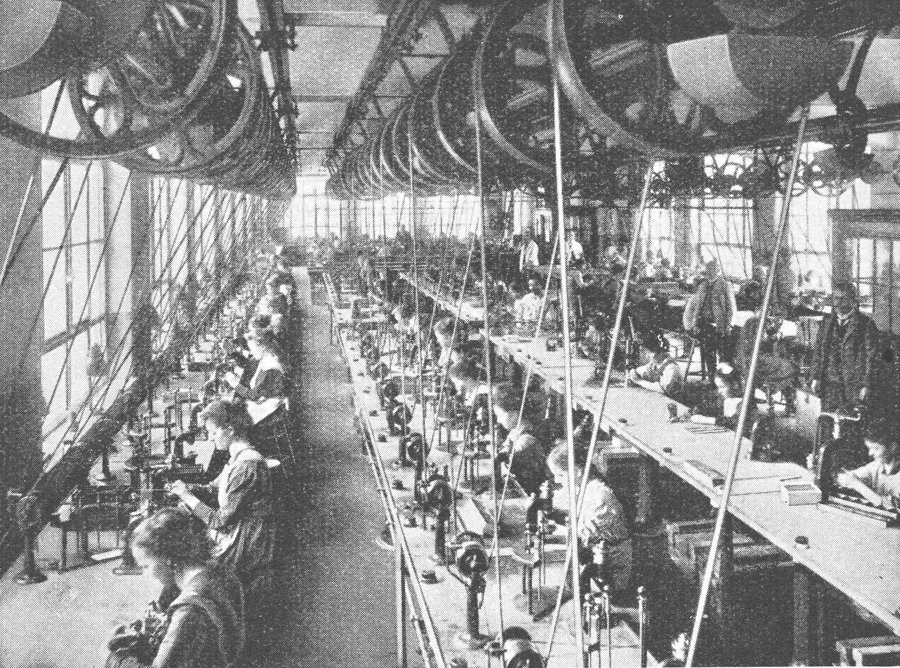

Die Schweizer Uhrenindustrie, geprägt von jahrhundertealter Handwerkskunst, verkörpert Exzellenz und Luxus. Ihre faszinierende Geschichte begann im 16. Jahrhundert und entwickelte sich zu einer weltweit anerkannten Branche für feinste Zeitmesser. Als Herzstück der Schweizer Wirtschaft bietet sie Spitzenarbeit und etabliert das Land als führendes Zentrum für Premiumuhren. Trotz technologischer Umbrüche bewahrt sie ihre Tradition und Innovationskraft, um global an der Spitze zu bleiben.